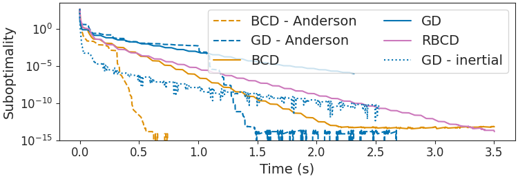

Note
Click here to download the full example code
Anderson Block Coordinate Descent for the group Lasso¶
This example shows the superiority of Anderson acceleration of block coordinate descent for the group Lasso.
Out:
usetex mode requires TeX.
Algo: bcd, use Anderson: True
/home/circleci/project/andersoncd/group.py:40: NumbaPerformanceWarning: '@' is faster on contiguous arrays, called on (array(float64, 2d, A), array(float64, 1d, C))
w[grp] = BST(old_w_g + Xg.T @ R / lc[g], alpha / lc[g])
/home/circleci/.local/lib/python3.8/site-packages/numba/core/typing/npydecl.py:937: NumbaPerformanceWarning: '@' is faster on contiguous arrays, called on (array(float64, 2d, A), array(float64, 1d, C))
warnings.warn(NumbaPerformanceWarning(msg))
Early exit
Algo: pgd, use Anderson: True
Algo: bcd, use Anderson: False
Algo: pgd, use Anderson: False
Algo: rbcd, use Anderson: False
Algo: fista, use Anderson: False
import numpy as np
import matplotlib.pyplot as plt
from collections import defaultdict
from numpy.linalg import norm
from sklearn.preprocessing import LabelBinarizer
from sklearn.datasets import fetch_openml
from andersoncd.group import solver_group
from andersoncd.plot_utils import (configure_plt, dict_algo_name, dict_color)
save_fig = False
configure_plt(fontsize=14, poster=False)
X, y = fetch_openml("leukemia", return_X_y=True)
X, y = X.to_numpy(), y.to_numpy()
X = X[:, :3_000]
y = LabelBinarizer().fit_transform(y)[:, 0].astype(float)
y -= y.mean()
X -= np.mean(X, axis=0)[None, :]
X /= norm(X, axis=0)[None, :]
grp_size = 5
y = X @ np.random.randn(X.shape[1])
alpha_max = np.max(norm((X.T @ y).reshape(-1, grp_size), axis=1))
alpha = alpha_max / 50
tol = 1e-10
max_iter = 10_000
E = defaultdict(lambda: dict())
dict_times = defaultdict(lambda: dict())
all_algos = [
('bcd', True),
('pgd', True),
('bcd', False),
('pgd', False),
('rbcd', False),
('fista', False),
]
for name, use_acc in all_algos:
print(f"Algo: {name}, use Anderson: {use_acc}")
# dry run for numba compilation:
solver_group(
X, y, alpha, grp_size, max_iter=2, tol=tol, algo=name,
f_gap=1, use_acc=use_acc, tmax=1, verbose=False)
_, E[name][use_acc], _, dict_times[name][use_acc] = solver_group(
X, y, alpha, grp_size, max_iter=max_iter, tol=tol, algo=name,
f_gap=5, use_acc=use_acc, compute_time=True, tmax=3.5, verbose=False)
p_star = np.inf
for name, use_acc in all_algos:
p_star = min(p_star, E[name][use_acc][-1])
plt.close('all')
fig, ax = plt.subplots(figsize=(7.5, 2.6), constrained_layout=True)
for name, use_acc in all_algos:
if use_acc:
linestyle = 'dashed'
elif name.startswith(('fista', 'apcg')):
linestyle = 'dotted'
elif name.startswith('rbcd'):
linestyle = '-'
else:
linestyle = 'solid'
ax.semilogy(
dict_times[name][use_acc],
(E[name][use_acc] - p_star),
label=dict_algo_name[(name, use_acc)],
color=dict_color[name], linestyle=linestyle)
ax.set_yticks((1e-15, 1e-10, 1e-5, 1e0))
ax.set_ylabel(r"Suboptimality")
ax.set_xlabel(r"Time (s)")
plt.legend(ncol=2)
plt.show(block=False)
Total running time of the script: ( 0 minutes 36.764 seconds)